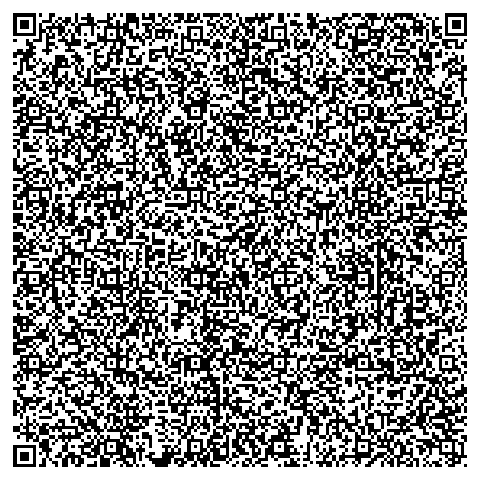

Cultivos Estos cultivos solo permiten
plantas de hoja verde como perejil, lechugam excepto la lechuga repollo por su peso, apio, etc.
Niveles de Ph Para el hidroponico el nivel de ph en el que se deberia de estar
equivale entre el 6 a 7.
App ApkDescarga la App HidroFarm
